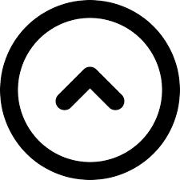
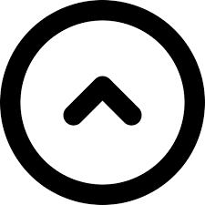

Con basta experiencia en el ambito de la contabilidad y las finanzas, dada su formación principal academica, lo que conlleva su enfoque en sistemas que se adapten a las necesidades Contables-Administrativas-Financieras del cliente.-
Información Personal
Edad: 38
Residencia: Catamarca
Nacimiento: 28/02/85
Nacionalidad: Argentina
Telefono: 383-448182
E-mail: juanchi.curador@mimail.com
Experiencia Laboral
2008 - 2010 / Pasante Estudio Contable DC y Asoc.
2010 - 2019 / Contador Socio de Estudio Contable DC y Asoc.
2019 - Act. / Contador en Jefe Sistemas Web Inc.
Fortalezas
Diseños de Administración
Contabilidad Aplicada
HTML (inicial)
CSS (inicial)
Estudios
2004 - 2010 / Carrera de Contador Públicop Universidad Publica
2019 - 2022 / Cursos virtuales de desarrollo Front-End
 
